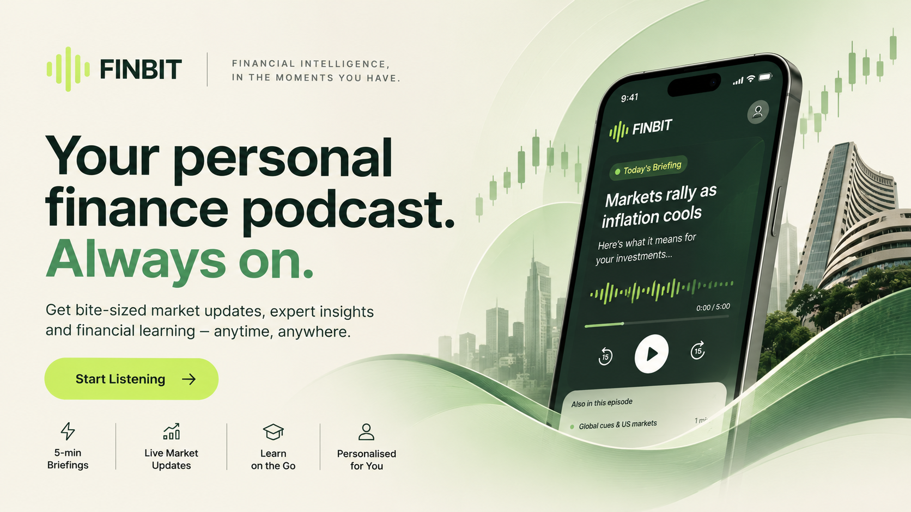
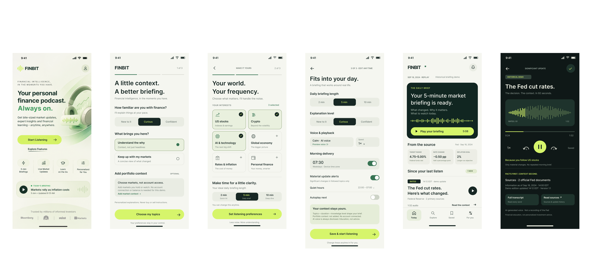

Information takes too much time
Updates are scattered across news apps, newsletters, social media, and long-form videos-requiring 30+ minutes of daily reading just to keep up.
Financial intelligence, in the moments you have-a B2B2C audio-first platform that transforms fragmented market updates into personalized, source-backed briefings inside existing brokerage, banking, and wealth apps.
People want to stay financially informed-they just don't have time to read. Market updates demand active screen attention, while real life happens in small hands-free windows.
Updates are scattered across news apps, newsletters, social media, and long-form videos-requiring 30+ minutes of daily reading just to keep up.
Users see headlines, tickers, and red/green charts without understanding what happened, why it matters, or how events connect.
People have small windows while commuting, walking, cooking, or exercising-yet financial news forces uninterrupted visual reading.
Works full-time, actively uses an investment or banking app, and wants clear market understanding without spending 30 minutes reading every morning:
Personalized overview of overnight cues and watchlist highlights.
Listens to a tailored explanation of a followed industry or policy.
Triggered update explaining a major intraday market move.
Concise summary of the day's key takeaways and what to watch next.
"How might we deliver personalized, trustworthy financial context through short-form audio that fits naturally into everyday routines?"
| Traditional Podcasts | FINBIT (On-Demand Intelligence Briefing) |
|---|---|
| Fixed publishing schedule | Updates dynamically throughout the day |
| Broad, static topics (20–60 min) | Personalized topics & depth (1–10 min) |
| Same content for every listener | Adapts to knowledge level, language, and duration |
| Listen to the entire episode | Jump straight to chapters or specific updates |
| Quickly outdated after publishing | Timestamped, refreshed, and source-linked |
Acquiring standalone consumer users in financial media is costly. Embedding FINBIT inside brokerages, banks, and wealth apps drives retention without partners building editorial or audio AI teams.
Adding buy/sell buttons or investment advice triggers heavy regulatory friction and dilutes trust. FINBIT stays strictly focused on financial intelligence and education.
Hallucinated numbers destroy credibility instantly. Every briefing enforces explicit AI disclosure, live timestamps, facts vs. analysis separation, and primary source links (NSE, Reuters).
Structured around three listening modes, six content formats, and personalization that adapts to time, knowledge level, and attention.
Built around Daily Briefing (morning summary), Moment-Based Updates (1–3 min pulses structured as What happened → Why it matters → What else to watch), and a Curated Interest Feed.
Listeners follow Indian/global markets, stocks, sectors, IPOs, and policy-and tailor delivery across three dimensions:
Compresses to core takeaways when you have 3 minutes, or expands into deeper analysis when you have 15.
Segmented into Markets → Economy → Watchlist → What to Watch so listeners skip straight to what matters.
Tap "Why is this happening?" mid-listen to trigger a contextual mini-explanation without losing your spot.
Set your exact interruption bar (Major events / Followed stocks / All interests / Feed-only) to prevent spam.
12 focused screens spanning the Consumer Listening App (10 screens) and B2B Partner Governance Console (2 screens), paired with interactive Figma prototypes.

Screen 05 combines interactive chapters, synced transcript, inline "Explain this further" branching, AI disclosure, live timestamp, and a one-tap "Read sources" drawer.
Tracks total plays, completion rate, average listening time, top topics, returning listeners, and format performance (Briefings vs. Pulses) so partners prove engagement lift.
Controls for content categories, regional markets, host voice/identity, brand colors, embedded player styling, API feeds, and push rules.

Select financial interests, markets, and followed companies.
Set duration, knowledge level, language, and audio style.
Personalized daily briefing card + live market pulse strip.
Chapter breakdown, duration, and Quick / Daily / Deep depth selector.
Chapters, synced transcript, Explain Further, AI badge & sources.
Event-triggered 2-minute breakdown (Sensex move or RBI policy).
Curated audio stream for specific stocks or sectors.
Browse formats like Explain It and Finance Fundamentals.
Lightweight playlist for commutes and offline listening.
Granular control over interruption thresholds.
Plays, completion rate, listening time, topics & returning users.
Voice identity, brand theme, player embed, API feeds & push rules.
Testing the core hypothesis: Can personalized financial audio help users stay informed more consistently and with less effort than traditional news?
Run time-poor professionals through a simulated morning commute-testing onboarding speed, chapter jumping, "Explain this further" clarity, and whether source links build trust in AI audio.
Evaluate whether the 4-tier interruption threshold feels empowering or overly complex during initial preference setup.
Walk FinTech PMs at brokerages and banks through the Partner Dashboard to validate must-have analytics and white-label brand controls.
Two-tier framework measuring consumer habit formation and B2B partner ROI.
| Metric | What It Measures | Target Benchmark |
|---|---|---|
| Onboarding & Preference Setup | % of users completing interest + listening setup without friction | ≥ 90% in < 60 sec |
| Audio Player Task Success | Ability to jump chapters, view transcript, and verify a source mid-play | ≥ 95% unassisted |
| Perceived Trust Score | User trust rating (1–5) in AI-generated audio with vs. without source links | ≥ 4.2 / 5 |
| Information Retention | Ability to accurately recall "what happened & why" after a 2-min Pulse | ≥ 85% accuracy |
Proves audio becomes a genuine daily routine inside the partner app.
Started briefings listened to ≥ 80%, validating duration & depth fit.
Engagement depth across Daily Briefings vs. Market Pulses.
Retention & session frequency lift for FINBIT listeners vs. non-listeners.
Users muting live market alerts-validating smart thresholds.
Trust-first clinical workflow separating AI note drafting from clinician authority.